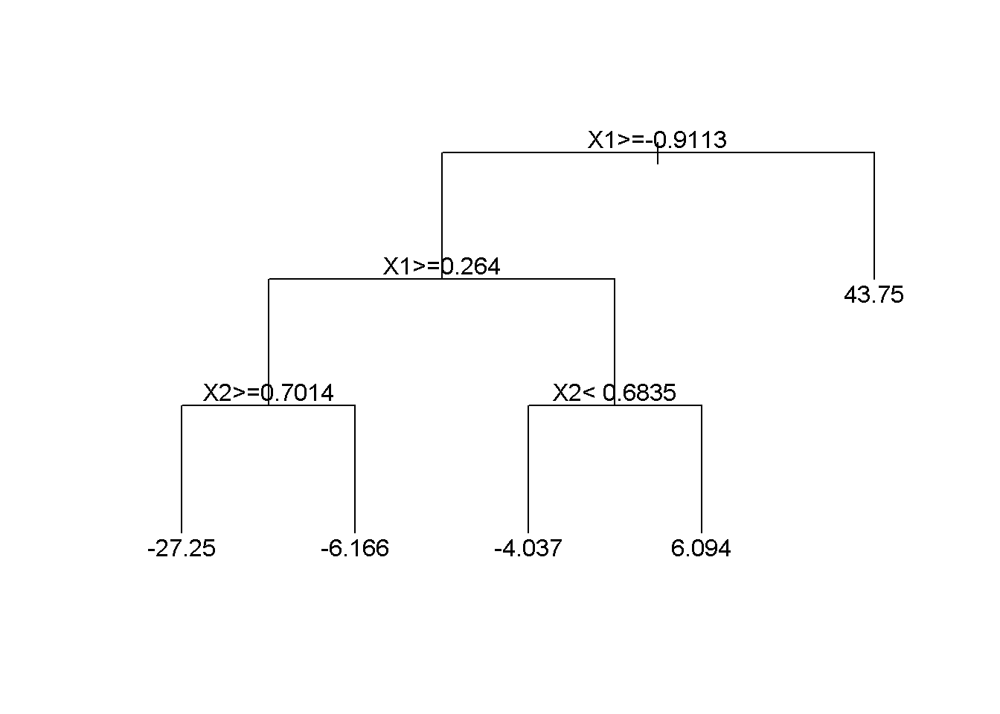

Chapter 6 Regression
6.1 Linear Regression
Regression models are useful tools for (1) understanding the relationship between a response variable \(Y\) and a set of predictors \(X_1,\dotsc,X_p\) and (2) predicting new responses \(Y\) from the predictors \(X_1,\dotsc,X_p\).
We’ll start with linear regression, which assumes that the relationship between \(Y\) and \(X_1,\dotsc,X_p\) is linear.
Let’s consider a simple example where we generate data from the following regression model.
\[Y = \beta_0 + \beta_1X_1 + \beta_2X_2 + \varepsilon\]
To generate data from this model, we first need to set the “true values” for the model parameters \((\beta_0, \beta_1, \beta_2)\), generate the predictor variables \((X_1, X_2)\), and generate the error term \((\varepsilon)\).
- parameters: \(\beta_0=-5\), \(\beta_1=2\), \(\beta_2=-1\)
- predictor variables: \(X_1\sim Unif(-1,1)\), \(X_2\sim Unif(-1,1)\)
- error term: \(\varepsilon\sim N(0,1)\)
Once we have fixed the true values of the parameters and generated predictor variables and the error term, the regression formula above tells us how to generate the response variable \(Y\).
n = 100
beta0 = -5
beta1 = 2
beta2 = -1
X1 = runif(n,min=-1,max=1)
X2 = runif(n,min=-1,max=1)
epsilon = rnorm(n)
Y = beta0 + beta1*X1 + beta2*X2 + epsilonNow let’s inspect the data.
pairs(Y ~ X1 + X2)
As we should expect, we find a positive relationship between \(Y\) and \(X_1\), a negative relationship between \(Y\) and \(X_2\), and no relationship between \(X_1\) and \(X_2\) (since they are uncorrelated).
Now let’s formally estimate the model parameters \((\beta_0,\beta_1,\beta_2)\) using R’s built-in linear model function lm( ).
lm.fit = lm(Y ~ X1 + X2)
summary(lm.fit)##
## Call:
## lm(formula = Y ~ X1 + X2)
##
## Residuals:
## Min 1Q Median 3Q Max
## -2.257 -0.623 0.033 0.571 2.083
##
## Coefficients:
## Estimate Std. Error t value Pr(>|t|)
## (Intercept) -4.914 0.091 -53.99 < 2e-16 ***
## X1 1.666 0.159 10.48 < 2e-16 ***
## X2 -1.004 0.157 -6.38 6.2e-09 ***
## ---
## Signif. codes: 0 '***' 0.001 '**' 0.01 '*' 0.05 '.' 0.1 ' ' 1
##
## Residual standard error: 0.892 on 97 degrees of freedom
## Multiple R-squared: 0.601, Adjusted R-squared: 0.593
## F-statistic: 73 on 2 and 97 DF, p-value: <2e-16Parameter Estimates
First, focus on the “Coefficients” section. Notice that in the first column R reports estimates of our model parameters: \(\hat{\beta}_0=-4.914\), \(\hat{\beta}_1=1.666\), and \(\hat{\beta}_2=-1.004\). Since we generated this data set, we know the “true” values are \(\beta_0=-5\), \(\beta_1=2\), and \(\beta_2=-1\). The estimates here are pretty close to the truth. (Remember: the estimates will not exactly equal the true values because we only have a random sample of \(n=100\) observations!)
Interpretation
How should we interpret the estimates? Since \(\hat{\beta}_1=1.666\), we would say that a one unit increase in \(X_1\) will lead to a 1.666 unit increase in \(Y\). Similarly, a one unit increase in \(X_2\) will lead to a 1.004 unit decrease in \(Y\). The only way to interpret the intercept is as the value of \(Y\) when the \(X\)’s are all set to zero. In many instances, setting \(X=0\) makes no sense, so we usually focus our attention on the coefficients attached to the predictor variables.
Significance
In the second, third, and fourth columns, R reports the standard error of \(\hat{\beta}\) and the t-statistic and p-value corresponding to a (one-sample) test of \(H_0:\beta=0\) against \(H_1:\beta\ne0\). The asterisks next to the p-values indicate the levels (e.g., \(\alpha=0.05\), \(\alpha=0.001\)) for which we would conclude that the parameter is significantly different from zero. This test is naturally of interest in a regression setting because if \(\beta_2=0\), for example, then \(X_2\) has no effect on the response \(Y\).
Model Fit
Now look at the last section where it says “Multiple R-squared: 0.601”. This value is the \(R^2\) statistic, which measures the percent of the variation in \(Y\) that is explained by the predictors. In this case, we find that 60.1% of the variation in \(Y\) can be explained by \(X_1\) and \(X_2\). In general, it is difficult to define an absolute scale for what a “good” \(R^2\) value is. In some contexts, 60% may be very high while in others it may be low. It likely depends on how difficult the response variable is to model and predict.
Prediction
Suppose I observed some new values of \(X_1\) and \(X_2\), say \(X_1=0\) and \(X_2=0.5\). How can I use the model to predict the corresponding value of \(Y\)?
I could simply do the calculation by hand: \[\hat{Y}=\hat{\beta}_0 + \hat{\beta}_1X_1 + \hat{\beta}_2X_2 =-4.914 + 1.666(0) - 1.004(0.5)=-5.416\] where we use the “hat” notation to denote estimates or predicted values.
We can also use built-in prediction tools in R (where any differences would just be due to rounding error).
predict(lm.fit, newdata=data.frame(X1=0,X2=0.5))## 1
## -5.415The first argument of the predict( ) function is the regression object we created using the lm( ) function. The second argument is the new set of covariates for which we want to predict a new response \(Y\). (Note: the names of variables in newdata must be the same names used in the original data.)
6.2 Regression Trees
A natural question to ask now is what happens if the “true” model that generated our data was not linear? For example, our model could look something like this:
\[Y_i = \beta_0 + {\beta_1X_{1i} \over\beta_2 + X_{2i}} + \varepsilon_i\]
Here we still have three model parameters (\(\beta_0,\beta_1,\beta_2\)), but they enter the regression function in a nonlinear fashion.
If we generate data from this model and then estimate the linear regression model from section 1, what will happen?
# generate data
n = 100
beta0 = -5
beta1 = 2
beta2 = -1
X1 = runif(n,min=-1,max=1)
X2 = runif(n,min=-1,max=1)
epsilon = rnorm(n)
Y = beta0 + beta1*X1/(beta2+X2) + epsilon
# estimate linear regression model
lm.fit = lm(Y ~ X1 + X2)
summary(lm.fit)##
## Call:
## lm(formula = Y ~ X1 + X2)
##
## Residuals:
## Min 1Q Median 3Q Max
## -47.93 -8.55 -1.96 4.48 165.50
##
## Coefficients:
## Estimate Std. Error t value Pr(>|t|)
## (Intercept) -3.81 2.15 -1.77 0.07952 .
## X1 -14.36 3.60 -3.99 0.00013 ***
## X2 5.73 3.51 1.63 0.10560
## ---
## Signif. codes: 0 '***' 0.001 '**' 0.01 '*' 0.05 '.' 0.1 ' ' 1
##
## Residual standard error: 21.2 on 97 degrees of freedom
## Multiple R-squared: 0.17, Adjusted R-squared: 0.153
## F-statistic: 9.91 on 2 and 97 DF, p-value: 0.000121The answer is that we get incorrect estimates of model parameters! (Remember \(\beta=-5,\beta_1=2,\beta_2=-1\).)
A more flexible approach to regression modeling is provided by regression trees. The idea is to split up the covariate space into homogeneous regions (with respect to the response \(Y\)) and then fit simple linear models within each region.
We can use the rpart library in R to fit and plot regression trees. You’ll actually notice a similar syntax between lm( ) and rpart( ).
library(rpart)
# estimate regression tree
tree.fit = rpart(Y ~ X1 + X2)
# plot the estimated tree
plot(tree.fit, uniform=TRUE, margin=.05)
text(tree.fit)
The output from a regression tree model looks very different from the output of a linear regression model. This is mostly because we had real-valued parameters in the linear model, but have much more complicated parameters in the tree model.
The top node is called the root node and indicates the most important variable for predicting \(Y\). Each subsequent node is called an interior node until you get to the last node showing a numeric value which is called a terminal node.
Tree models should be interpreted as a sequence of decisions for the purposes of making a prediction. Each node will present a logical statement and if that statement is true, we move down and to the left whereas if that statement is false, we move down and to the right.
For example, if you wanted to predict \(Y\) when \(X_1=0\) and \(X_2=0.5\), the root note first asks “Is \(X_1\geq -0.9113\)?” If yes, then left and if no then right. Here our answer is yes, so we go to the next node to the left and ask “Is \(X_1\geq0.264\)?” Our answer is no so we go to the right and ask \(X_2<0.6835\)?” Our answer is yes so we go to the left. Since this represents the terminal node, we’re left with our predition of \(\hat{Y}=-4.037\). That is, if \(X_1=1\) and \(X_2=9\) then the model predicts \(\hat{Y}=-4.037\).
We can also use the predict( ) function as we did with the linear regression model above.
predict(tree.fit, newdata=data.frame(X1=0,X2=0.5))## 1
## -4.0376.3 Model Selection
Let’s see how regression trees compare to linear regression models in terms of out-of-sample prediction. We’ll consider two cases:
- The true model is a linear model
- The true model is a nonlinear model
CASE A: TRUE MODEL IS LINEAR
First, we’ll generate a training and test data set from a linear regression model as in section 1. The training data set will be used for estimation and the test data will be used for prediction.
n = 100
beta0 = -5
beta1 = 2
beta2 = -1
X1 = runif(n,min=-1,max=1)
X2 = runif(n,min=-1,max=1)
epsilon = rnorm(n)
Y = beta0 + beta1*X1 + beta2*X2 + epsilon
train = data.frame(Y=Y[1:70], X1=X1[1:70], X2=X2[1:70])
test = data.frame(Y=Y[71:100], X1=X1[71:100], X2=X2[71:100])Now let’s estimate both the linear regression and regression tree models on the training data.
# estimate linear regression model
lm.fit = lm(Y ~ X1 + X2, data=train)
# estimate regression tree model
tree.fit = rpart(Y ~ X1 + X2, data=train)To compare out-of-sample model performance, we’ll compute the root mean squared error (RMSE). \[\text{RMSE}=\sqrt{{1\over n}\sum_{i=1}^n (\hat{y}_i-y_i)^2}\]
# linear regression model
lm.predict = predict(lm.fit, newdata=test)
lm.rmse = sqrt(mean((lm.predict-test$Y)^2))
lm.rmse## [1] 0.9157# regression tree model
tree.predict = predict(tree.fit, newdata=test)
tree.rmse = sqrt(mean((tree.predict - test$Y)^2))
tree.rmse## [1] 1.149In this case the linear regression model has better predictive performance, which is not too surprising because we simulated the data from that model!
CASE B: TRUE MODEL IS NONLINEAR
We will again generate a training and test data set, but now from the nonlinear regression model we used in section 2.
n = 100
beta0 = -5
beta1 = 2
beta2 = -1
X1 = runif(n,min=-1,max=1)
X2 = runif(n,min=-1,max=1)
epsilon = rnorm(n)
Y = beta0 + beta1*X1/(beta2+X2) + epsilon
train = data.frame(Y=Y[1:70], X1=X1[1:70], X2=X2[1:70])
test = data.frame(Y=Y[71:100], X1=X1[71:100], X2=X2[71:100])Let’s again estimate both the linear regression and regression tree models on the training data and compute the predictive RMSE.
# linear regression model
lm.fit = lm(Y ~ X1 + X2, data=train)
lm.predict = predict(lm.fit, newdata=test)
lm.rmse = sqrt(mean((lm.predict - test$Y)^2))
lm.rmse## [1] 18.76# regression tree model
tree.fit = rpart(Y ~ X1 + X2, data=train)
tree.predict = predict(tree.fit, newdata=test)
tree.rmse = sqrt(mean((tree.predict - test$Y)^2))
tree.rmse## [1] 17.35Now the regression tree model has better predictive performance (but notice that the linear model still does relatively well!) In general, regression trees suffer from a problem called overfitting: the trees learn too much from the training data that they don’t generalize well to test data. There are ways of correcting for this, and you will learn more about them in Data Analyics II!